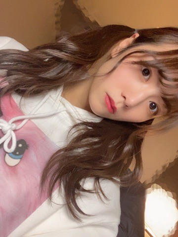

2021/0408Thu在った証拠
こんばんは
北野日奈子です！
2021年が始まってすでに3ヶ月が過ぎていますね
また3ヶ月が経てば私のお誕生日月です
そうなると25歳になります
正真正銘どこからどうみても大人なわけです
それなのに好きな食べ物は大人っぽくなっていかないんだよね
まず大人が何が好きなのか分からないけど
もう少し大人の意見を収集して分析していかないと
大人になるには勉強が必要ですね

美味しい温かいそばを食べたい！
美味しいお蕎麦を食べてお腹の底から温めたい！
もうすぐ乃木恋の彼氏イベントですね
久しぶりに皆さんと生で対面するから
緊張して全然目を合わせなかったらごめんなさい笑
3月28日
無事に二期生ライブを終えられました！
未央奈もとても綺麗で可愛くて
未央奈をずっと近くで見てきた私としては
心からの感謝とお疲れさまという感情で
いっぱいになりました！
寂しいとかで泣いていたわけではないんだ～
だってこれからもずっと仲良しだと思うし！
二期生会で集まるだろうしね！
いつも一緒にいた5人でも集まりそうだし！
永遠の別れではないから
普段の私で毎日を送れています！
未央奈も新しい道で頑張っていることだし
私も乃木坂でもう少しがんばるぞ～
二期生8周年おめでとう！ありがとう！

また書きます！
2021/04/08 16:30
コメント(554)
25歳になるんですね^ ^
子供っぽさが残る大人って素敵だと思うので気にしないでください！
卒業は寂しそうですが、そう、またいつでも会えますよ！
子供っぽさが残る大人って素敵だと思うので気にしないでください！
卒業は寂しそうですが、そう、またいつでも会えますよ！
日奈子ちゃんブログ更新ありがとう！大人になるにはいろいろ知らないといけなくて大変ですよね。自分も日々いろんな言葉とか表現を学んでいきたいです。
2期生ライブお疲れ様でした！これからも関係が続いていくからこそ、寂しいより感謝の涙だったのですね！
日奈子ちゃん、もう少し乃木坂にいてくれてありがとう！限りある時間だから一生懸命に応援します！次はどんなブログになるから楽しみです！
2期生ライブお疲れ様でした！これからも関係が続いていくからこそ、寂しいより感謝の涙だったのですね！
日奈子ちゃん、もう少し乃木坂にいてくれてありがとう！限りある時間だから一生懸命に応援します！次はどんなブログになるから楽しみです！
改めて2期生8周年おめでとうございます‼️
2期生ライブは、間違いなくこれまで僕が観てきた全てのライブの中で最高のライブでした。
2021年3月28日という日は僕の人生で1番と言っていいぐらい大切な日になりました。本当に本当にありがとう。
溜まった涙の水圧でドアが開かないぐらいいっぱい泣いちゃった笑
あと、これは絶対に伝えたいこと。
今までずっと「堀北コンビ推し」って言ってきたこと、推しが2人いるのって嫌だったりするのかなって罪悪感みたいなのも実はずっとあったんだけど、受け入れてくれていつも仲良くしてくれてありがとう。
これからは、女優として活躍する未央奈ちゃんのことも応援しつつ乃木坂では今後も末永く日奈子ちゃん推しをやらせて下さい。
よろしくお願いしますっ！
乃木恋のイベント、久しぶりに直接会えるのドキドキする！
楽しみにしてるね〜
くろぴょん
2期生ライブは、間違いなくこれまで僕が観てきた全てのライブの中で最高のライブでした。
2021年3月28日という日は僕の人生で1番と言っていいぐらい大切な日になりました。本当に本当にありがとう。
溜まった涙の水圧でドアが開かないぐらいいっぱい泣いちゃった笑
あと、これは絶対に伝えたいこと。
今までずっと「堀北コンビ推し」って言ってきたこと、推しが2人いるのって嫌だったりするのかなって罪悪感みたいなのも実はずっとあったんだけど、受け入れてくれていつも仲良くしてくれてありがとう。
これからは、女優として活躍する未央奈ちゃんのことも応援しつつ乃木坂では今後も末永く日奈子ちゃん推しをやらせて下さい。
よろしくお願いしますっ！
乃木恋のイベント、久しぶりに直接会えるのドキドキする！
楽しみにしてるね〜
くろぴょん
北野さん、お疲れさまです！
先日はミートアンドグリートありがとうございました！
自分は1枚分だけだったので、ほんの数秒しかつながらなかったのですが、それでも参加することができてよかったです。
堀さんの卒業は寂しいですが、それでも笑顔で送り出す2期生のみんなやメンバーを見て自分も自然と笑顔になれました。
これからも元気な笑顔の北野さんを活力にさせていただきます！
先日はミートアンドグリートありがとうございました！
自分は1枚分だけだったので、ほんの数秒しかつながらなかったのですが、それでも参加することができてよかったです。
堀さんの卒業は寂しいですが、それでも笑顔で送り出す2期生のみんなやメンバーを見て自分も自然と笑顔になれました。
これからも元気な笑顔の北野さんを活力にさせていただきます！
きぃちゃんの明るさにいつも元気付けられてます！！
2期生ライブは最高だったし、みんなキラキラしてて感動した！けど決めるとこは決めててかっこよかったしライブについては話したいことばっかり！！
自分も3ヶ月後に成人を迎えるけどなにが大人なんかわからないまだ親に頼ってる部分もあるしまだまだ模索していかないとなって思ってます
けど一つだけはっきりしてるのはきぃちゃんを応援し続けることかなw次のブログもミーグリも楽しみにしてます！
名前覚えててくれたらうれしいなってw
2期生ライブは最高だったし、みんなキラキラしてて感動した！けど決めるとこは決めててかっこよかったしライブについては話したいことばっかり！！
自分も3ヶ月後に成人を迎えるけどなにが大人なんかわからないまだ親に頼ってる部分もあるしまだまだ模索していかないとなって思ってます
けど一つだけはっきりしてるのはきぃちゃんを応援し続けることかなw次のブログもミーグリも楽しみにしてます！
名前覚えててくれたらうれしいなってw
きーちゃんには永遠に少女でいて欲しい。
今のままが最高(o^^o)
今のままが最高(o^^o)
ブログ更新ありがとう！
2期生ライブお疲れ様！めっちゃ良かったよ！
2期生ライブお疲れ様！めっちゃ良かったよ！
二期生ライブお疲れ様！
ほんとによかったよーーー！
忙しいのにブログ更新ありがとう！
はやくオンラインじゃなくて生でライブが見れる日が来るといいな！大学の新生活がんばるから、きいちゃんも頑張って！
ほんとによかったよーーー！
忙しいのにブログ更新ありがとう！
はやくオンラインじゃなくて生でライブが見れる日が来るといいな！大学の新生活がんばるから、きいちゃんも頑張って！
日奈子ちゃんお疲れ様！
もう少しじゃなくまだまだいてくれないと困る笑笑
人にはそれぞれの役割りと居場所があるんだから
無理をして誰かの代わりになる必要はないし
ファンが知らないこともたくさんあるだろうから
そう簡単な話ではないけど
気負いすぎず日奈子ちゃんらしく過ごしてください！
ライブも乃木中の二期生回もほんと楽しかった！
何か一言呟く感じでもいいから
どんどんブログ更新してくれたらいいよ！
んじゃまた！
もう少しじゃなくまだまだいてくれないと困る笑笑
人にはそれぞれの役割りと居場所があるんだから
無理をして誰かの代わりになる必要はないし
ファンが知らないこともたくさんあるだろうから
そう簡単な話ではないけど
気負いすぎず日奈子ちゃんらしく過ごしてください！
ライブも乃木中の二期生回もほんと楽しかった！
何か一言呟く感じでもいいから
どんどんブログ更新してくれたらいいよ！
んじゃまた！
最近日奈子さんのモバメ読むと体調心配です
コメントが遅くなってごめんね。ブログ更新ありがとう。最近は気温差が激しいね。今日も可愛いね。音楽番組見たよ。乃木中も見てるよ。2期生ハウス見たよ。本当に2期生は仲良しだね。既にコメントしたかもしれないけど先月ののぎおび見たよ。お疲れ様。楽しかったよ。新シングルは全種類買ったよ。口ほどにもないKISSのMV見たよ。ライブで観た時も凄かったけど改めて凄さを実感しています。乃木中のスタジオライブも良かったよ。先日のミニライブ見れなかった。ごめんね。乃木坂46のお誕生日おめでとうございます。前夜祭とライブ両方見たよ。お疲れ様。楽しかったよ。どの曲も良かったよ。裏話はありますか?期別ライブも見たよ。お疲れ様。楽しかったよ。どの曲も良かったよ。特にセンター企画の日常が良かったよ。裏話はありますか?確かに日奈子ちゃんも大人だね。でも食の好みは人それぞれで良いんじゃない?確かに温かいお蕎麦は美味しいよね。体を温めたいね。プレイボーイや週刊少年マガジン買ったよ。どのショットも可愛かったよ。ブログのどの写真も可愛いね。ミーグリありがとう。お疲れ様。楽しかったよ。ちゃんと聞こえてたかな?スムーズに話せたから良かったとかな?次はもう少ししっかり話せるようにするね。日奈子ちゃんはもし10万円が自由に使えたら何に使いますか?好きなおせち料理の料理は何ですか?おせち料理やお蕎麦やお雑煮は食べた?好きなお弁当のおかずは何ですか?好きなお餅の食べ方は何ですか?四季の中で1番好きな季節は何時ですか?遅くなったけどメリークリスマス!ケーキは食べた?プレゼント貰った?好きな花は何ですか?育ててみたい野菜や果物は何ですか?よく買うアイスは何ですか?好きな駄菓子は何ですか?去年を漢字一文字で表現するなら何ですか?年下からファンレターを貰うのは嬉しい?1度答えて貰った質問があるかもしれないけどもう1度答えて貰えると嬉しいです。これからも頑張ってください。ずっと応援しています。ファイト。次回のブログ更新楽しみにしています。体調を崩さないように頑張ってね。ミーグリありがとう。期別ライブ楽しかったよ。
ブログ更新嬉しすぎた！！！
二期生ライブお疲れ様〜
これからもお仕事がんばれ〜
二期生ライブお疲れ様〜
これからもお仕事がんばれ〜
こんにちは。
無理に大人にならなくてもいずれ大人になるし、大人の舌になっていくので、マイペースで良いと思いますよ。
きぃちゃんらしく、で。
無理に大人にならなくてもいずれ大人になるし、大人の舌になっていくので、マイペースで良いと思いますよ。
きぃちゃんらしく、で。
きいちゃんお疲れ様です。
あと少しで25歳かぁ、（笑）
ほんとに時は早くて泣きそうになります。
いつかは別れの時がくるって、分かっててもその時のこと考えると胸が苦しくなるんだよね
サヨナラに強くなれる日はいつくるのかなぁ
体調に気をつけてね！頑張れ！
あと少しで25歳かぁ、（笑）
ほんとに時は早くて泣きそうになります。
いつかは別れの時がくるって、分かっててもその時のこと考えると胸が苦しくなるんだよね
サヨナラに強くなれる日はいつくるのかなぁ
体調に気をつけてね！頑張れ！
日奈子ちゃんブログ更新ありがとう！
そして二期生ライブ本当にお疲れ様でした。
二期生ライブでの日奈子ちゃんは、今までで1番幸せそうに見えました。
運命共同体で始まる影ナレ、そしてOvertureのあとに堂々と話していた日奈子ちゃんを見て、今まで日奈子ちゃんを応援してきてよかった！って心から思いました。
最初のアナスターシャは今までのことは全部このアナスターシャの為にあったのかなって、思えるくらい凄いみんながキラキラしてて1秒1秒を心から楽しんで噛み締めてるように見えたの。
見ててずっと涙が止まらないくらい素敵なものでした。
そこから、ライブ神や可愛くて楽しい楽曲。どれも本当にみんなが輝いてて、日奈子ちゃんの笑顔が本当に素敵で大好きで幸せ〜って気持ちでいっぱいだったよˊᵕˋ
そして、いちばん話したかったこと。
日常の前の日奈子ちゃんのスピーチ。中々選抜に入れなくて、それでもずっと頑張ってきた日奈子ちゃんがやっと選抜に定着してきた頃にアンダーになった日奈子ちゃん。正直、あの頃を思い出すと凄く苦しい。日奈子ちゃんも本当に辛かったと思う。
更にその時渡された『アンダー』。なんでこの曲なんだろうってずっと考えてた。なんでこの曲が日奈子ちゃんの初めてのセンターの曲なんだろう、って苦しくなった。
そんな曲をバックミュージックに、休業の頃を語る日奈子ちゃんはもう、『アンダー』の曲への答えを出せたのかな？
ずっとね、12月のアンダーライブのときの『アンダー』のラスサビでの日奈子ちゃんの笑顔？というか口は笑ってるけど目は力強い、そんな表情の理由を考えてるんだ。
そして、あの時乃木坂に帰ってきてくれてありがとう。
日奈子ちゃんに寄り添い続けてくれた同期のみんなありがとう。
日奈子ちゃんが乃木坂にいることが今も本当に嬉しくて、乃木坂として活動している日奈子ちゃんを見るだけで泣きそうになっちゃうくらい日奈子ちゃんのことが大好きなんだ！笑
乃木坂という大切な場所を手放さないでいてくれて本当にありがとう！日奈子ちゃんの存在が私にとって大きな心の支えです。
日奈子ちゃんの努力も、強さもしっかりファンの目に映ってるよ^^
そして、そんな日奈子ちゃんが復帰後初めてのセンター楽曲『日常』が本当にかっこよかったよ！見る度にパワーアップする日常が本当にすごい！7人での披露だったのに、迫力の塊でした。
見たことないカメラアングルのとこもあったりして、なんか、もうかっこいい、凄い、！って気持ちでいっぱいでした。
最後の決め顔？のとこの日奈子ちゃんの表情も初めて見る表情だったな。いつもは睨みつける感じだけど、なんだろうな、凄く楽しそうに見えたの。二期生だけでの披露だったからなのかな？分からないけど、二期生だけの日常は今までの日常と何もかもが違く感じて、凄く大好きな表現だなって思ったの！
他にも、ゴルゴンゾーラでの3人が凄く可愛くて幸せそうで、これが3人での最後の披露なんだなって思うとまた涙出てきちゃうし、ここじゃないどこかで堀北コンビで寄り添うように座ってる姿が本当にエモくて好き〜！！！って気持ちでいっぱいになったんだ。
二期生が全員アンダーになってしまったり、中々選抜に入れなかったり。苦しかったと思うのにずっと乃木坂で戦い続けてくれて本当にありがとう。
日奈子ちゃんがアイドルとしてキラキラ踊ってる姿が本当に大好きで宝物です。
ゆっくりと咲く花、本当に素敵な曲でだいすき。何回もMVを見てるんだけどね、やっぱりライブって素敵だね。その時しか見れないみんなの表情が凄く儚くて切なくて、でも綺麗で可愛くて素敵で。鮮明に覚えてるんだ！みんなの指でお花を作ったあと、1人ずつ重ねてって。未央奈ちゃんと手を重ねた時の日奈子ちゃんの表情とか凄く記憶に残ってる。
本当に二期生ってみんながみんなのこと大好きなんだなぁって実感できたライブでした。
未央奈ちゃんのドレス姿も本当に綺麗で、そんな未央奈ちゃんを囲う二期生の背中が温かくて。
堀北コンビは最後まで堀北コンビだったね笑 宇宙人みたい！ってドレス姿の時まで言っちゃう日奈子ちゃんが、本当に日奈子ちゃんらしくて大好きだなって。
日奈子ちゃんらしいって言葉を使っちゃったけど、『らしい』って毎日でも変わっていいと思うんだ、私。
そのときの日奈子ちゃんの本当の姿が『日奈子ちゃんらしさ』なのかなって思うんだ。日奈子ちゃんは日奈子ちゃんだから。どんな日奈子ちゃんでも大好きだよ。元気な日奈子ちゃんだから、好き。とか日常でかっこいいから好き。とかじゃなくて。『北野日奈子ちゃんだから好き。』なんだ。日奈子ちゃんがやりたいって思うことをやってくれてたらもうそれで十分だから。
本当に、日奈子ちゃんの存在ってだけ元気が貰えてやる気が出るんだ。
私が北野日奈子ちゃんを好きでいる理由は、『北野日奈子ちゃんが好き。』。ただそれだけだよ。
好きな理由はもうこんなにライブについて語れちゃうくらい沢山だから、いつかいーっぱい教えるね^^笑
ただ、本当に乃木坂にいてくれてありがとう。
日奈子ちゃんのことが心の底から大好きです。また直接話せる日が来るのずっと待ってるね！だいすき。いつもありがとう！
長くてごめんね汗
そして二期生ライブ本当にお疲れ様でした。
二期生ライブでの日奈子ちゃんは、今までで1番幸せそうに見えました。
運命共同体で始まる影ナレ、そしてOvertureのあとに堂々と話していた日奈子ちゃんを見て、今まで日奈子ちゃんを応援してきてよかった！って心から思いました。
最初のアナスターシャは今までのことは全部このアナスターシャの為にあったのかなって、思えるくらい凄いみんながキラキラしてて1秒1秒を心から楽しんで噛み締めてるように見えたの。
見ててずっと涙が止まらないくらい素敵なものでした。
そこから、ライブ神や可愛くて楽しい楽曲。どれも本当にみんなが輝いてて、日奈子ちゃんの笑顔が本当に素敵で大好きで幸せ〜って気持ちでいっぱいだったよˊᵕˋ
そして、いちばん話したかったこと。
日常の前の日奈子ちゃんのスピーチ。中々選抜に入れなくて、それでもずっと頑張ってきた日奈子ちゃんがやっと選抜に定着してきた頃にアンダーになった日奈子ちゃん。正直、あの頃を思い出すと凄く苦しい。日奈子ちゃんも本当に辛かったと思う。
更にその時渡された『アンダー』。なんでこの曲なんだろうってずっと考えてた。なんでこの曲が日奈子ちゃんの初めてのセンターの曲なんだろう、って苦しくなった。
そんな曲をバックミュージックに、休業の頃を語る日奈子ちゃんはもう、『アンダー』の曲への答えを出せたのかな？
ずっとね、12月のアンダーライブのときの『アンダー』のラスサビでの日奈子ちゃんの笑顔？というか口は笑ってるけど目は力強い、そんな表情の理由を考えてるんだ。
そして、あの時乃木坂に帰ってきてくれてありがとう。
日奈子ちゃんに寄り添い続けてくれた同期のみんなありがとう。
日奈子ちゃんが乃木坂にいることが今も本当に嬉しくて、乃木坂として活動している日奈子ちゃんを見るだけで泣きそうになっちゃうくらい日奈子ちゃんのことが大好きなんだ！笑
乃木坂という大切な場所を手放さないでいてくれて本当にありがとう！日奈子ちゃんの存在が私にとって大きな心の支えです。
日奈子ちゃんの努力も、強さもしっかりファンの目に映ってるよ^^
そして、そんな日奈子ちゃんが復帰後初めてのセンター楽曲『日常』が本当にかっこよかったよ！見る度にパワーアップする日常が本当にすごい！7人での披露だったのに、迫力の塊でした。
見たことないカメラアングルのとこもあったりして、なんか、もうかっこいい、凄い、！って気持ちでいっぱいでした。
最後の決め顔？のとこの日奈子ちゃんの表情も初めて見る表情だったな。いつもは睨みつける感じだけど、なんだろうな、凄く楽しそうに見えたの。二期生だけでの披露だったからなのかな？分からないけど、二期生だけの日常は今までの日常と何もかもが違く感じて、凄く大好きな表現だなって思ったの！
他にも、ゴルゴンゾーラでの3人が凄く可愛くて幸せそうで、これが3人での最後の披露なんだなって思うとまた涙出てきちゃうし、ここじゃないどこかで堀北コンビで寄り添うように座ってる姿が本当にエモくて好き〜！！！って気持ちでいっぱいになったんだ。
二期生が全員アンダーになってしまったり、中々選抜に入れなかったり。苦しかったと思うのにずっと乃木坂で戦い続けてくれて本当にありがとう。
日奈子ちゃんがアイドルとしてキラキラ踊ってる姿が本当に大好きで宝物です。
ゆっくりと咲く花、本当に素敵な曲でだいすき。何回もMVを見てるんだけどね、やっぱりライブって素敵だね。その時しか見れないみんなの表情が凄く儚くて切なくて、でも綺麗で可愛くて素敵で。鮮明に覚えてるんだ！みんなの指でお花を作ったあと、1人ずつ重ねてって。未央奈ちゃんと手を重ねた時の日奈子ちゃんの表情とか凄く記憶に残ってる。
本当に二期生ってみんながみんなのこと大好きなんだなぁって実感できたライブでした。
未央奈ちゃんのドレス姿も本当に綺麗で、そんな未央奈ちゃんを囲う二期生の背中が温かくて。
堀北コンビは最後まで堀北コンビだったね笑 宇宙人みたい！ってドレス姿の時まで言っちゃう日奈子ちゃんが、本当に日奈子ちゃんらしくて大好きだなって。
日奈子ちゃんらしいって言葉を使っちゃったけど、『らしい』って毎日でも変わっていいと思うんだ、私。
そのときの日奈子ちゃんの本当の姿が『日奈子ちゃんらしさ』なのかなって思うんだ。日奈子ちゃんは日奈子ちゃんだから。どんな日奈子ちゃんでも大好きだよ。元気な日奈子ちゃんだから、好き。とか日常でかっこいいから好き。とかじゃなくて。『北野日奈子ちゃんだから好き。』なんだ。日奈子ちゃんがやりたいって思うことをやってくれてたらもうそれで十分だから。
本当に、日奈子ちゃんの存在ってだけ元気が貰えてやる気が出るんだ。
私が北野日奈子ちゃんを好きでいる理由は、『北野日奈子ちゃんが好き。』。ただそれだけだよ。
好きな理由はもうこんなにライブについて語れちゃうくらい沢山だから、いつかいーっぱい教えるね^^笑
ただ、本当に乃木坂にいてくれてありがとう。
日奈子ちゃんのことが心の底から大好きです。また直接話せる日が来るのずっと待ってるね！だいすき。いつもありがとう！
長くてごめんね汗
日奈子ちゃん、ブログ更新ありがとうございます٩(*´︶`*)۶
2期生8周年おめでとうございますっ！
2期生ライブは2期生の絆を改めて感じた、素敵なライブで涙がとまりませんでした。
きっとこれから、2期生もどんどん少なくなっていってしまうとは思うけれど、それでも根本にある絆は変わらないし、2期生は2期生でしかないので、ずっとずっと応援してます。
日奈子ちゃん、今までもこれからも大好きです！
2期生お誕生日おめでとうございましたっ
2期生8周年おめでとうございますっ！
2期生ライブは2期生の絆を改めて感じた、素敵なライブで涙がとまりませんでした。
きっとこれから、2期生もどんどん少なくなっていってしまうとは思うけれど、それでも根本にある絆は変わらないし、2期生は2期生でしかないので、ずっとずっと応援してます。
日奈子ちゃん、今までもこれからも大好きです！
2期生お誕生日おめでとうございましたっ
こんにちは
いつも日奈子ちゃんから元気をもらってます！！！！
わたしもいつかそんな日奈子ちゃんにお返しができるようになりたい！
いつも可愛くてかっこいい日奈子ちゃんが大好きです(^^)
大好きな日奈子ちゃんに思い伝わってほしい！！
すきすきすきすきすきすきすき！！！！！
いつも日奈子ちゃんから元気をもらってます！！！！
わたしもいつかそんな日奈子ちゃんにお返しができるようになりたい！
いつも可愛くてかっこいい日奈子ちゃんが大好きです(^^)
大好きな日奈子ちゃんに思い伝わってほしい！！
すきすきすきすきすきすきすき！！！！！
ブログ更新待ってたよおおお！ありがとうございますありがとうございます。
２期ラ最高だったよ。もぉほんとにかっこよかった。そして涙無しには見れなかったなぁ笑
日奈子ちゃんの言う、もう少しがどのくらいかは分からないけど、その日が来るまでずーーーーっと応援させてください！もちろんその後も！
簡単なブログも楽しみにしてる！
身体に気をつけてね。ずーっと応援してます！
２期ラ最高だったよ。もぉほんとにかっこよかった。そして涙無しには見れなかったなぁ笑
日奈子ちゃんの言う、もう少しがどのくらいかは分からないけど、その日が来るまでずーーーーっと応援させてください！もちろんその後も！
簡単なブログも楽しみにしてる！
身体に気をつけてね。ずーっと応援してます！
きいちゃん大好きです。
応援してます！
応援してます！
日奈子さんのいる乃木坂46が大好きです
未央奈さんのいない乃木坂46でも元気な日奈子さんが見れるの楽しみです
まだまだ乃木坂46でいて下さい
未央奈さんのいない乃木坂46でも元気な日奈子さんが見れるの楽しみです
まだまだ乃木坂46でいて下さい
日奈子ちゃんブログ更新ありがとう‼︎
これからの日奈子ちゃんもずっと応援しています。
これからの日奈子ちゃんもずっと応援しています。
２期生ライブおつかれさまでした！ その日は自分の誕生日でもありますので最高の誕生日プレゼントだと勝手に思い込んで観させていただきました！
蕎麦いいですね～ 普通は蕎麦を茹でたら水で洗ってつゆは別に作ると思うのですが、そば湯大好きな自分はゆで汁にめんつゆを入れてそのまま食べちゃいます 麵と一緒に切り干し大根を入れてもおいしいですよ～！ 濃厚なそば湯に蕎麦を泳がせて食べる感じですね
普通は蕎麦を茹でたら水で洗ってつゆは別に作ると思うのですが、そば湯大好きな自分はゆで汁にめんつゆを入れてそのまま食べちゃいます 麵と一緒に切り干し大根を入れてもおいしいですよ～！ 濃厚なそば湯に蕎麦を泳がせて食べる感じですね
冷たい蕎麦なら栃木県鹿沼名物にら蕎麦おいしいです！
蕎麦いいですね～
冷たい蕎麦なら栃木県鹿沼名物にら蕎麦おいしいです！
ライブお疲れ様でした！
きぃちゃん大好き
２期生大好き
きぃちゃん大好き
２期生大好き
二期生８周年おめでとう！こちらこそありがとう！好きだー！
蕎麦買ってきます。今日の夕飯から蕎麦にハマります。
蕎麦買ってきます。今日の夕飯から蕎麦にハマります。
ライブ見ました！！めちゃくちゃよかったです！！！
ブログ更新ありがとう！！
私はあと約2ヶ月で20歳になります！
乃木坂で頑張るって言ってくれて嬉しい〜〜
私も頑張る〜〜
応援してます( ˘꒳˘ )
私はあと約2ヶ月で20歳になります！
乃木坂で頑張るって言ってくれて嬉しい〜〜
私も頑張る〜〜
応援してます( ˘꒳˘ )
二期生ライブお疲れ様でした。
皆の仲の良さや絆、未央奈に対する想いが伝わってきてとても素敵なライブでした。
そして改めて二期生8周年おめでとう！
俺は乃木坂に在籍してる間もその先も日奈子ちゃんをずっとずっと応援してます！
日奈子ちゃんの言葉の表現の仕方がとても好きです。
俺もイメージを相手に上手く伝えるのが難しいかなぁ
#hinakomail
皆の仲の良さや絆、未央奈に対する想いが伝わってきてとても素敵なライブでした。
そして改めて二期生8周年おめでとう！
俺は乃木坂に在籍してる間もその先も日奈子ちゃんをずっとずっと応援してます！
日奈子ちゃんの言葉の表現の仕方がとても好きです。
俺もイメージを相手に上手く伝えるのが難しいかなぁ
#hinakomail
ブログ更新ありがとう！
２期生ライブお疲れさまでした！念願の開催でただ見てるだけで嬉しいです。
終始楽しかった時間でした。
最後乃木坂全員がサプライズで出るところがとてもエモかったです！
私はきいちゃんより年上だけど全然まだ大人になった実感がないけどね(笑)
ちなみに誕生日は同じ７月でちょうど一週間前です！
きいちゃんががんばってるうちにずっと応援するよ！
乃木恋の彼氏イベントめっちゃ楽しみにしています！
終わったらまた感想を書きます！
２期生ライブお疲れさまでした！念願の開催でただ見てるだけで嬉しいです。
終始楽しかった時間でした。
最後乃木坂全員がサプライズで出るところがとてもエモかったです！
私はきいちゃんより年上だけど全然まだ大人になった実感がないけどね(笑)
ちなみに誕生日は同じ７月でちょうど一週間前です！
きいちゃんががんばってるうちにずっと応援するよ！
乃木恋の彼氏イベントめっちゃ楽しみにしています！
終わったらまた感想を書きます！
ブログ更新ありがとう！
2期生ライブお疲れ様でした。
あのセトリは2期生にしかできないと思います。2期生全員が輝いていて綺麗でした！3月28日はとっても大事な日になったよ！ありがとうございました！これからもずっと応援します！
2期生ライブお疲れ様でした。
あのセトリは2期生にしかできないと思います。2期生全員が輝いていて綺麗でした！3月28日はとっても大事な日になったよ！ありがとうございました！これからもずっと応援します！
日奈子～～～～～～～
きいちゃん、ブログ更新ありがとう！
2期生ライブお疲れ様でした！ものすごく、感動的なライブでした。
未央奈ちゃんとも、これからも友達だと思うので仲良しでいてくれたら、自分も幸せです〜
2期生ライブお疲れ様でした！ものすごく、感動的なライブでした。
未央奈ちゃんとも、これからも友達だと思うので仲良しでいてくれたら、自分も幸せです〜
ブログありがとう♪
日奈子さんはいつまでも子供でいいような気がする！
大人な日奈子さん…私は想像出来ない…
ライブお疲れ様でした。
歌って踊ってるの素敵ですよ！
2期生最高ヽ(´▽｀)/
元気な日奈子さんを観るのを楽しみにしてます。
ずっと応援してるぞ！
日奈子さんはいつまでも子供でいいような気がする！
大人な日奈子さん…私は想像出来ない…
ライブお疲れ様でした。
歌って踊ってるの素敵ですよ！
2期生最高ヽ(´▽｀)/
元気な日奈子さんを観るのを楽しみにしてます。
ずっと応援してるぞ！
きぃちゃんらしく、そのままで良いと思います
体調管理のために、食を意識することは大事ですが、体が持つ内は、自分の食べたいものを食べて、体力を付けて、それで栄養も取れば良いと思います
無理に周りに合わせる必要はありませんよ(*´ω`*) 楽しんで下さい それがきぃちゃんらしさだと思います(*^▽^*)
体調管理のために、食を意識することは大事ですが、体が持つ内は、自分の食べたいものを食べて、体力を付けて、それで栄養も取れば良いと思います
無理に周りに合わせる必要はありませんよ(*´ω`*) 楽しんで下さい それがきぃちゃんらしさだと思います(*^▽^*)
きいちゃんと今同じ気持ちだよ！
寂しいというよりは今後が楽しみ
寂しさもあるけどね。
本当に2期生最高の絆、仲間、そして最強のテンションの高さで本当に大好き
25歳になるのか〜。
ここ最近過去の映像など振り返る機会が多くて、2期生みんな成長したよね！
本当に2期生のあの楽しい雰囲気が大好き
寂しいというよりは今後が楽しみ
寂しさもあるけどね。
本当に2期生最高の絆、仲間、そして最強のテンションの高さで本当に大好き
25歳になるのか〜。
ここ最近過去の映像など振り返る機会が多くて、2期生みんな成長したよね！
本当に2期生のあの楽しい雰囲気が大好き
モバメもブログも嬉しいー
自分も同じ考えで、別れがきても永遠の別れじゃないから前向きに今を生きていこうと思えたよ。ありがとう！
無理しないでね。これからも応援する！！
自分も同じ考えで、別れがきても永遠の別れじゃないから前向きに今を生きていこうと思えたよ。ありがとう！
無理しないでね。これからも応援する！！
ブログ待ってました〜
日奈子ちゃんの言葉って考えさせてくれるから好きやで!
日奈子ちゃんの言葉って考えさせてくれるから好きやで!
ブログ更新ありがとう！
2期生ライブお疲れ様でした！ 前日のAbema放送から2期生らしいわちゃわちゃあり、感動ありの素敵な2日間をありがとうございました。
ブログ更新いつでもお待ちしてますよ♪
2期生ライブお疲れ様でした！ 前日のAbema放送から2期生らしいわちゃわちゃあり、感動ありの素敵な2日間をありがとうございました。
ブログ更新いつでもお待ちしてますよ♪
早くライブ観たいよ
ひーなこ♡
ありがとう♡
ありがとう♡
ブログ更新ありがとう！
二期生ライブは感動でした。感動そのものでした♬
ANNのショールームでの「日常」も良かったです。
で、北野さん登場のANNを自分のショールームデビュー
にしましたが、良い記念日になりました！
また何か出てねー。ではまた〜。
二期生ライブは感動でした。感動そのものでした♬
ANNのショールームでの「日常」も良かったです。
で、北野さん登場のANNを自分のショールームデビュー
にしましたが、良い記念日になりました！
また何か出てねー。ではまた〜。
二期生だいすき♡
日奈子ちゃんだいすき♡♡♡
日奈子ちゃんだいすき♡♡♡
きいちゃん
もう少しと言わず
あと5年はいてください
お願いします
もう少しと言わず
あと5年はいてください
お願いします
ひなこちゃんモバメもブログもありがとう！！！☺︎
2期生ライブとっても感動したし、嬉しかったし、幸せな時間でした！！ほんとにありがとう〜！！
そしてね、モバメでお話してたけど、ひなこちゃんの好きなところはまっすぐな気持ちとか努力とか思いやりとか全部好きなところだし、でも言葉だけじゃ表せないくらい好きなところはたくさんです〜！♡ だから、またお話できる時いっぱい伝えさせてもらいます！！ひなこちゃんとお話するの楽しみにしてます！！
2期生ライブとっても感動したし、嬉しかったし、幸せな時間でした！！ほんとにありがとう〜！！
そしてね、モバメでお話してたけど、ひなこちゃんの好きなところはまっすぐな気持ちとか努力とか思いやりとか全部好きなところだし、でも言葉だけじゃ表せないくらい好きなところはたくさんです〜！♡ だから、またお話できる時いっぱい伝えさせてもらいます！！ひなこちゃんとお話するの楽しみにしてます！！
大人になるって難しいですよね～？
俺も世間でいったら立派な大人なのですが
未だにバッタとか見たら追いかけちゃうも～ん…


俺も世間でいったら立派な大人なのですが
未だにバッタとか見たら追いかけちゃうも～ん…
ブログ更新ありがとうございます。
好きなものは無理に変えなくてもいいんじゃないかなと、
気づいたら変化するものだと思います。
好きなら好きって言えばいい
ライブお疲れ様でした。2回観ましたが、最高でした
同期ならではの雰囲気、お互いへの思いやりや尊敬、ふざけあい、そのどれもが尊くてキラキラしていました。
きいちゃんの笑顔が印象的でした。涙しながらも楽しそうな姿にグッときました
9年目の皆さんを応援していきます。
好きなものは無理に変えなくてもいいんじゃないかなと、
気づいたら変化するものだと思います。
好きなら好きって言えばいい
ライブお疲れ様でした。2回観ましたが、最高でした
同期ならではの雰囲気、お互いへの思いやりや尊敬、ふざけあい、そのどれもが尊くてキラキラしていました。
きいちゃんの笑顔が印象的でした。涙しながらも楽しそうな姿にグッときました
9年目の皆さんを応援していきます。
ブログ更新ありがとうございます！
2期生ライブ、オンラインだったけどとても素敵な時間を共有してもらえて嬉しかったし、会場の熱気や全員センター企画は本当に感動しました。
みなさんがしてきた努力や苦労は計り知れないので、気安く「頑張れ」なんて言えないけど、ひとつだけ確実に言えるのは2期生が大好きということです！
今までも、そしてこれからも2期生を応援できていることを本当に誇りに思います。
これからも微力ではありますが応援していきます！
2期生ハウスもめっちゃおもしろかったです
「自由人・北野日奈子」と「ガサツ北野」のテロップ最高でした笑
これからも明るくて元気なひなこちゃんを見れることを期待しています！
2期生ライブ、オンラインだったけどとても素敵な時間を共有してもらえて嬉しかったし、会場の熱気や全員センター企画は本当に感動しました。
みなさんがしてきた努力や苦労は計り知れないので、気安く「頑張れ」なんて言えないけど、ひとつだけ確実に言えるのは2期生が大好きということです！
今までも、そしてこれからも2期生を応援できていることを本当に誇りに思います。
これからも微力ではありますが応援していきます！
2期生ハウスもめっちゃおもしろかったです
「自由人・北野日奈子」と「ガサツ北野」のテロップ最高でした笑
これからも明るくて元気なひなこちゃんを見れることを期待しています！
きいちゃんブログありがとうね!
簡単な〜って言ってめっちゃしっかりしてるじゃん!
嬉しいよ〜!!
なんだろう りんごさんとか大人の好きな食べ物とか
詳しそうだよね あとまなっちゃんもね 聞いてみるのありだね
てか運命共同体のまいちゅんもよく知ってそうじゃん!!
前のミーグリで話したけど、今イギリスに来てて
日本食やお蕎麦すごい恋しい〜!!
そして2期生ライブおつかれでした
一生自分の心に強く残る素晴らしいライブでした
あんなにライブで泣いたことなかったし、
本当最高の時間でした。改めてありがとうね！
そろそろきいちゃんに手紙も書くね!!
またブログ楽しみにしてます
ではでは
さかひろ
簡単な〜って言ってめっちゃしっかりしてるじゃん!
嬉しいよ〜!!
なんだろう りんごさんとか大人の好きな食べ物とか
詳しそうだよね あとまなっちゃんもね 聞いてみるのありだね
てか運命共同体のまいちゅんもよく知ってそうじゃん!!
前のミーグリで話したけど、今イギリスに来てて
日本食やお蕎麦すごい恋しい〜!!
そして2期生ライブおつかれでした
一生自分の心に強く残る素晴らしいライブでした
あんなにライブで泣いたことなかったし、
本当最高の時間でした。改めてありがとうね！
そろそろきいちゃんに手紙も書くね!!
またブログ楽しみにしてます
ではでは
さかひろ
きぃちゃん！ブログ更新ありがとう。いつも頑張ってくれてありがとう♡大好きです！！！
きいちゃんー！ブログ更新ありがと！
2期生ライブおつかれ様！
あんなにボロ泣きしたライブ初めてかもってくらい泣きました。みんなの感情がオンラインなのにものすごい伝わってきて。より一層応援したくなった！ほんとに2期生大好きだなって思った！これからも応援させてください♡私は2期生のおかげでここまで頑張れて来れてます！ありがとうー！きいちゃんの場を和ませるところ、情熱的なところ、人思いなところ、かわいいところ、大好き！
2期生ライブおつかれ様！
あんなにボロ泣きしたライブ初めてかもってくらい泣きました。みんなの感情がオンラインなのにものすごい伝わってきて。より一層応援したくなった！ほんとに2期生大好きだなって思った！これからも応援させてください♡私は2期生のおかげでここまで頑張れて来れてます！ありがとうー！きいちゃんの場を和ませるところ、情熱的なところ、人思いなところ、かわいいところ、大好き！


可愛い写真もありがとう！
2期生ライブとってもよかったよー！！！
またお手紙かくね